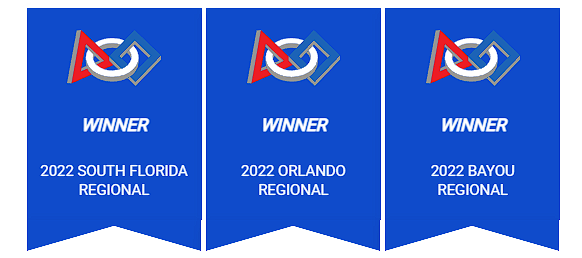
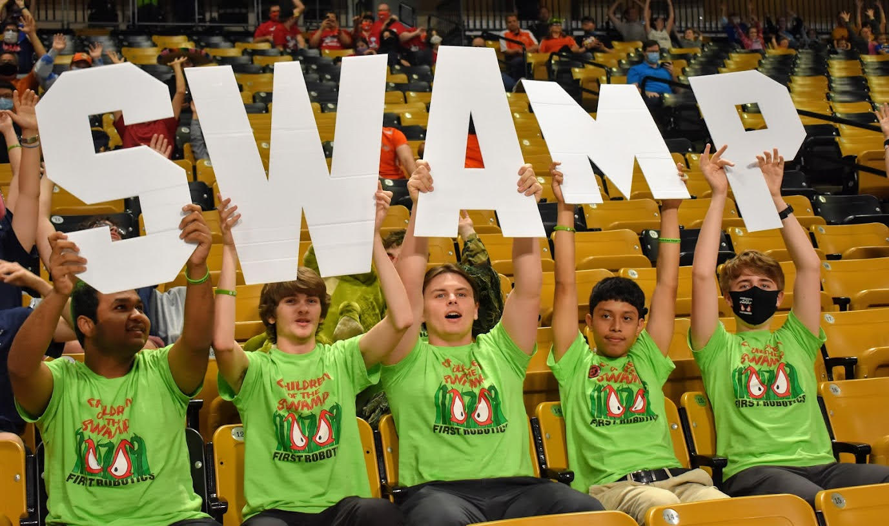
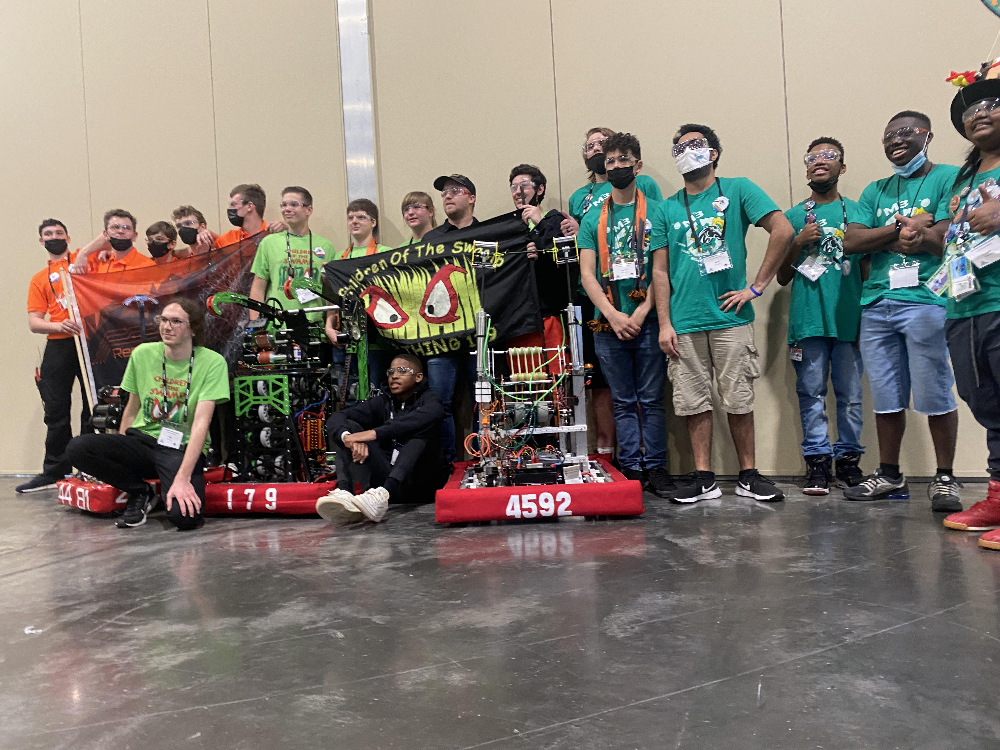

|
Throughout high school I spent a good majority of my time involved in FIRST Robotics team 179 Children of the Swamp. This was a passion that developed in middle school and continued to a higher level of education. This club has thought me a lot and served as a second family at many times. Here is where I learned what type of leader I aspired to be and how I handle taking on big task. |
While in this club I served as Co-captain and a member of the pit crew. In my most recent and final season, I was able to help lead my team to a 50-1 regular season win/loss record. From there we advanced to the World Championship in Houston, Tx where we placed 13th in our division. Stats aside, my senior year in this club was very enjoyable, it allowed me to travel with some of my best friends and make many lifelong memories.
|  |
I also earned the title of being my team’s Dean’s List Semifinalist for my sophomore and junior year. Being nominated for this award means that I played a pivotal role in the leadership and construction of the robot and the team. It also shows that I increased awareness for FIRST and its mission while achieving personal technical expertise and accomplishment.
As I continue with my college education I plan to frequently visit and give back to my home team when I’m granted the opportunity. I’ve also looked into helping FIRST Robotics teams locally in Tallahassee.
|  |  |